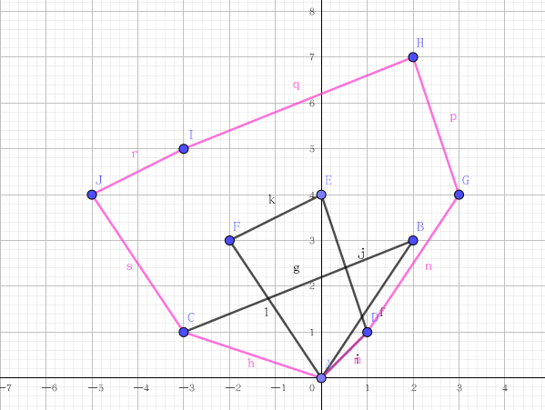

闵可夫斯基和入门
极坐标系
对于直角坐标系的点，它可以用极坐标系表示，其中
atan2 是已将象限纳入考量的反正切函数，或者
也就是向量与轴正半轴的夹角。atan2 的值域为。
是所谓的极角。按极角排序也就是按排序。
半平面交、凸包和凸多边形
三者其实没有太大区别。只是半平面交是用直线方程表示，而凸包是用顶点集表示，多边形则是由边的向量表示。
半平面交和凸包的对偶并不是单纯的表示方式的变化，这一点要注意。除非你用半平面交的交点集表示它，这才是单纯的表示方式的变化。
像闵可夫斯基和之类的，三者其实都可以经过简单的转化后使用。
半平面交对偶凸包
考虑条直线，我们要求形成的半平面交。
显然这是上凸的半平面交。
首先将直线按斜率从大到小排序。然后依次加入直线。假设当前末尾的直线和倒数第二的直线分别是。
则新加入一条则要一直删除末尾直线，直到
也就是交点的横坐标关系。
不妨设，那么上述算法就转化为，将点按照横坐标从大到小排序，算法过程中删除末尾点，直到
稍作化简：
如果我们把从大到小排序改为从小到大排序，那么该式就变成了，也就是下凸壳。
因此上凸的半平面交对偶后为下凸壳。
同理可得，下凸的半平面交对偶后为上凸壳。
不过要注意的是，这对偶关系只是考虑了半平面交上的点的情况。对于半平面交里和外的点则没有对偶（也可能是我没有分析出来的原因）。换言之这个对偶只描述了半平面交的形态。
闵可夫斯基和
定义两个点和的闵可夫斯基加法是向量加法，即。
对于二维平面上两个图形和，定义和的闵可夫斯基和为
特殊地，对于两个凸多边形，他们 的闵可夫斯基和有特殊的性质：
- 仍是凸多边形。
- 的顶点数等于这两个凸多边形每条有向边向量角的种类数。
- 的周长总等于这两个凸多边形的周长之和。
换句话说，等价于，把的边向量和的边向量放在一起按极角序排序，取两个图形的第一个点作为闵可夫斯基和的起点，然后按顺序一个一个首尾相接形成的图形（假设两个图形的顶点都按照极角序排好了）。

（这图也被盗了一万次了）
修订记录
- 2020年4月18日 创建文章